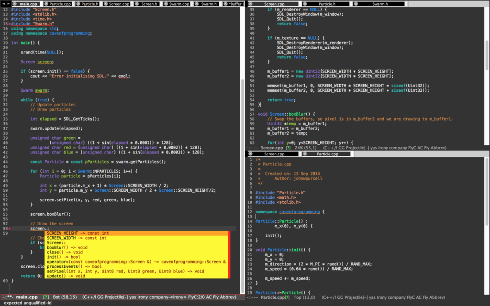

Emacs settings
There are some modes I used to turn my emacs into a powerful IDE environment for c++, python and latex editing. So I post it here to share with anyone who might have interest in using emacs as main editor.

In my OS X, I have installed those packages and Lisp scripts including, MELPA package manager, AUCTeX, irony-mode, company-mode, highlight-symbol, flycheck, company-irony-c-header, auto-complete, ac-math, Yasnippet, Neo Tree, company-auctex, ggtags, cpputils-camke, pyenv-mode, anaconda-mode, languagetool
For more information about c++ IDE environment settings please see this amazing introduction.
Here is my emacs/aquamacs setting file:
;; This is the Aquamacs Preferences file.
;; Add Emacs-Lisp code here that should be executed whenever
;; you start Aquamacs Emacs. If errors occur, Aquamacs will stop
;; evaluating this file and print errors in the *Messags* buffer.
;; Use this file in place of ~/.emacs (which is loaded as well.)
;; (package-initialize)
;; (load-theme 'tsdh-dark t)
;; MELPA package
(require 'package)
(add-to-list 'package-archives
'("melpa" . "https://melpa.org/packages/"))
(when (< emacs-major-version 24)
;; For important compatibility libraries like cl-lib
(add-to-list 'package-archives '("gnu" . "http://elpa.gnu.org/packages/")))
(package-initialize)
(load-theme 'tsdh-dark t) ;; load theme
;; maybe these two lines can be removed later.
(setq initial-frame-alist '((left . 50) ))
(smart-frame-positioning-mode nil)
(ac-config-default) ;; load auto-complete
;; latex
;; (setq TeX-auto-save t)
;; (setq TeX-parse-self t)
;; (setq-default TeX-master nil)
(add-hook 'LaTeX-mode-hook 'visual-line-mode)
(add-hook 'LaTeX-mode-hook 'flyspell-mode)
(add-hook 'LaTeX-mode-hook 'LaTeX-math-mode)
(add-hook 'LaTeX-mode-hook 'turn-on-reftex)
(setq reftex-plug-into-AUCTeX t)
;; irony-mode
(add-hook 'c++-mode-hook 'irony-mode)
(add-hook 'c-mode-hook 'irony-mode)
(add-hook 'objc-mode-hook 'irony-mode)
;; replace the `completion-at-point' and `complete-symbol' bindings in
;; irony-mode's buffers by irony-mode's function
(defun my-irony-mode-hook ()
(define-key irony-mode-map [remap completion-at-point]
'irony-completion-at-point-async)
(define-key irony-mode-map [remap complete-symbol]
'irony-completion-at-point-async))
(add-hook 'irony-mode-hook 'my-irony-mode-hook)
(add-hook 'irony-mode-hook 'irony-cdb-autosetup-compile-options)
;; company
;;(add-hook 'after-init-hook 'global-company-mode) ;; disable company to work in all case
(add-hook 'c++-mode-hook 'global-company-mode) ;; to prevent python has weird autocomplete.
(add-hook 'c-mode-hook 'global-company-mode) ;; added to enable c++ and c mode
(eval-after-load 'company
'(add-to-list 'company-backends 'company-irony))
;; highlight symbols
(require 'highlight-symbol)
(global-set-key [(control f3)] 'highlight-symbol)
(global-set-key [f3] 'highlight-symbol-next)
(global-set-key [(shift f3)] 'highlight-symbol-prev)
(global-set-key [(meta f3)] 'highlight-symbol-query-replace)
;; flycheck
(global-flycheck-mode)
;; company-irony-c-headers
(require 'company-irony-c-headers)
;; Load with `irony-mode` as a grouped backend
(eval-after-load 'company
'(add-to-list
'company-backends '(company-irony-c-headers company-irony)))
;; auto-complete & ac-math
(require 'package)
(package-initialize)
(require 'auto-complete)
(require 'auto-complete-config)
(ac-config-default)
(require 'ac-math)
(add-to-list 'ac-modes 'latex-mode) ; make auto-complete aware of `latex-mode`
(defun ac-LaTeX-mode-setup () ; add ac-sources to default ac-sources
(setq ac-sources
(append '(ac-source-math-unicode ac-source-math-latex ac-source-latex-commands)
ac-sources))
)
(add-hook 'LaTeX-mode-hook 'ac-LaTeX-mode-setup)
(global-auto-complete-mode t)
(setq ac-math-unicode-in-math-p t)
;; start yasnippet
(require 'yasnippet)
(yas-global-mode 1)
;; neotree
(add-to-list 'load-path "/some/path/neotree")
(require 'neotree)
(global-set-key [f8] 'neotree-toggle)
;; company auctex
(company-auctex-init)
;; namespace c++ indent
;; telling .h file is using c++ mode
(add-to-list 'auto-mode-alist '("\\.h\\'" . c++-mode))
;; indenting c++ mode
(defun my-c-setup ()
(c-set-offset 'innamespace [0]))
(add-hook 'c++-mode-hook 'my-c-setup)
;; Projectile
(projectile-global-mode)
;; ggtags
(require 'ggtags)
(add-hook 'c-mode-common-hook
(lambda ()
(when (derived-mode-p 'c-mode 'c++-mode 'java-mode 'asm-mode)
(ggtags-mode 1))))
(define-key ggtags-mode-map (kbd "C-c g s") 'ggtags-find-other-symbol)
(define-key ggtags-mode-map (kbd "C-c g h") 'ggtags-view-tag-history)
(define-key ggtags-mode-map (kbd "C-c g r") 'ggtags-find-reference)
(define-key ggtags-mode-map (kbd "C-c g f") 'ggtags-find-file)
(define-key ggtags-mode-map (kbd "C-c g c") 'ggtags-create-tags)
(define-key ggtags-mode-map (kbd "C-c g u") 'ggtags-update-tags)
(define-key ggtags-mode-map (kbd "M-,") 'pop-tag-mark)
;; semantic
(semantic-load-enable-primary-exuberent-ctags-support)
;; define c++ file extension types
(defvar c-files-regex ".*\\.\\(c\\|cpp\\|h\\|hpp\\)"
"A regular expression to match any c/c++ related files under a directory")
(defun my-semantic-parse-dir-v2 (root regex)
"
This function is an attempt of mine to force semantic to
parse all source files under a root directory. Arguments:
-- root: The full path to the root directory
-- regex: A regular expression against which to match all files in the directory
"
(let (
;;make sure that root has a trailing slash and is a dir
(root (file-name-as-directory root))
(files (directory-files root t ))
)
;; remove current dir and parent dir from list
(setq files (delete (format "%s." root) files))
(setq files (delete (format "%s.." root) files))
;; remove any known version control directories
(setq files (delete (format "%s.git" root) files))
(setq files (delete (format "%s.hg" root) files))
(while files
(setq file (pop files))
(if (not(file-accessible-directory-p file))
;;if it's a file that matches the regex we seek
(progn (when (string-match-p regex file)
;; get if buffer is open or open it if it's not
(setq buff (get-file-buffer file))
(setq opened-buffer nil)
(when (not buff)
(progn
(setq opened-buffer t)
(setq buff (find-file-noselect file))
))
(switch-to-buffer buff)
;; parse the buffer with semantic
(semantic-fetch-tags)
;; if we opened the buffer cleanup before proceeding
(when opened-buffer
(kill-buffer (buffer-name))
)
))
;;else if it's a directory
(my-semantic-parse-dir file regex)
)
)
)
)
(defun my-semantic-parse-current-dir (regex)
"
Parses all files under the current directory matching regex
"
(my-semantic-parse-dir (file-name-directory(buffer-file-name)) regex)
)
(defun lk-parse-curdir-c ()
"
Parses all the c/c++ related files under the current directory
and inputs their data into semantic
"
(interactive)
(my-semantic-parse-current-dir c-files-regex)
)
(defun lk-parse-dir-c (dir)
"Prompts the user for a directory and parses all c/c++ related files
under the directory
"
(interactive (list (read-directory-name "Provide the directory to search in:")))
(my-semantic-parse-dir (expand-file-name dri) c-files-regex)
)
(provide 'lk-file-search)
;; to here
;; cpputils-camke
(add-hook 'c-mode-common-hook
(lambda ()
(if (derived-mode-p 'c-mode 'c++-mode)
(cppcm-reload-all)
)))
;; OPTIONAL, somebody reported that they can use this package with Fortran
(add-hook 'c90-mode-hook (lambda () (cppcm-reload-all)))
;; OPTIONAL, avoid typing full path when starting gdb
(global-set-key (kbd "C-c C-g")
'(lambda ()(interactive) (gud-gdb (concat "gdb --fullname " (cppcm-get-exe-path-current-buffer)))))
;; OPTIONAL, some users need specify extra flags forwarded to compiler
(setq cppcm-extra-preprocss-flags-from-user '("-I/usr/src/linux/include" "-DNDEBUG"))
;; indent
(setq-default c-basic-offset 4)
;;==============================================================
;; python mode
;;pyenv-mode
(require 'pyenv-mode)
(defun projectile-pyenv-mode-set ()
"Set pyenv version matching project name."
(let ((project (projectile-project-name)))
(if (member project (pyenv-mode-versions))
(pyenv-mode-set project)
(pyenv-mode-unset))))
(add-hook 'projectile-switch-project-hook 'projectile-pyenv-mode-set)
;; Anaconda mode
(add-hook 'python-mode-hook 'anaconda-mode)
;; language tool
(require 'langtool)
(setq langtool-language-tool-jar " /my/path/to/languagetool-commandline.jar"
langtool-mother-tongue "zh"
langtool-disabled-rules '("WHITESPACE_RULE"
"EN_UNPAIRED_BRACKETS"
"COMMA_PARENTHESIS_WHITESPACE"
"EN_QUOTES"))</pre>